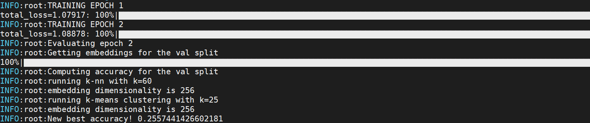

Powerful Benchmarker¶
Installation¶
pip install powerful-benchmarker
Modules that can be benchmarked¶
By default, you can access the following modules via the command line and the yaml config files:
- pytorch-metric-learning
- torch.nn
- torch.optim
- torch.optim.lr_scheduler
- torch.utils.data
- torchvision.transforms.transforms
- torchvision.datasets
- torchvision.models
- pretrainedmodels
You can add other classes and modules by using the register functionality.
Getting started¶
Set default flags¶
The easiest way to get started is to download the example script. Then change the default values for the following flags:
pytorch_homeis where you want to save downloaded pretrained models.dataset_rootis where your datasets will be downloaded, or where they are already located.root_experiment_folderis where you want all experiment data to be saved.
Try a basic command¶
The following command will run an experiment using the default config files, as well as download the CUB200 dataset into your dataset_root
python run.py --experiment_name test1 --dataset {CUB200: {download: True}}
If the code runs properly, you'll see training and testing progress like this: 
Experiment folder format¶
Experiment data is saved in the following format:
<root_experiment_folder> |-<experiment_name> |-configs |-<split scheme name> |-saved_models |-saved_csvs |-tensorboard_logs |-meta_logs |-saved_csvs |-tensorboard_logs
Here's what's in each subfolder:
configscontains the yaml config files necessary to reproduce the experiment.<split scheme name>/save_modelscontains saved pytorch models for a particular split scheme. (A split scheme simply refers to the way train/val/test splits are formed.)<split scheme name>/saved_csvscontains CSV files with data collected during training. It also contains an SQLite database file with the same data.<split scheme name>/tensorboard_logscontains the same information in<split scheme name>/saved_csvs, but in tensorboard format.meta_logs/saved_csvscontains CSV files for aggregate and ensemble accuracies. It also contains an SQLite database file with the same data.meta_logs/tensorboardcontains the same information inmeta_logs/save_csvs, but in tensorboard format.
View experiment data¶
There are multiple ways to view experiment data:
Tensorboard¶
Go to the <experiment_name> folder, and run tensorboard at the command line:
tensorboard --logdir=. --port=12345
Then in your web browser, go to localhost:<port>, where <port> is specified in the tensorboard command. You'll see plots like this:

CSV¶
Use any text editor or spreadsheet program to view the csv files that are saved in the saved_csvs folders.
SQLite¶
Use DB Browser to open the database files that are saved in the saved_csvs folders.
Resume training¶
You can interrupt the program and resume training at a later time:
python run.py --experiment_name test1 --resume_training latest
You can also resume using the model with the best validation accuracy:
python run.py --experiment_name test1 --resume_training best
Keep track of changes¶
Let's say you finished training for 100 epochs, and decide you want to train for another 50 epochs, for a total of 150. You would run:
python run.py --experiment_name test1 --resume_training latest \ --num_epochs_train 150 --merge_argparse_when_resuming
(The merge_argparse_when_resuming flag tells the code that you want to make changes to the original experiment configuration. If you don't use this flag, then the code will ignore your command line arguments, and use the original configuration. The purpose of this is to avoid accidentally changing configs in the middle of an experiment.)
Now in your experiments folder you'll see the original config files, and a new folder starting with resume_training.
<root_experiment_folder> |-<experiment_name> |-configs |-resume_training_config_diffs_<underscore delimited numbers> ...
This folder contains all differences between the originally saved config files and the parameters that you've specified at the command line. In this particular case, there should just be a single file config_general.yaml with a single line: num_epochs_train: 150.
The underscore delimited numbers in the folder name indicate which models were loaded for each split scheme. For example, let's say you are doing cross validation with 3 folds. The training process has finished 50, 30, and 0 epochs of folds 0, 1, and 2, respectively. You decide to stop training, and resume training with a different batch size. Now the config diff folder will be named resume_training_config_diffs_50_30_0.
Reproduce an experiment¶
To reproduce an experiment, use the --reproduce_results flag. For example, here's how to reproduce the experiments in the benchmark spreadsheets:
- In the spreadsheet, find the experiment you want to reproduce, click on its google drive link under the "config files" column, and download the folder.
- Run:
python run.py --reproduce_results <the_downloaded_folder> \
--experiment_name <experiment_name>
Evaluating on specific splits¶
By default, your model will be saved and evaluated on the validation set every save_interval epochs. To get accuracy for specific splits, use the --splits_to_eval flag and pass in a python-style list of split names: --splits_to_eval [train, test].
To run evaluation only, use the --evaluate or --evaluate_ensemble flag.
Cross validation split schemes¶
In this library, splits are not hard-coded into the dataset classes. Instead, train/val/test splits are created by a SplitManager, as specified in the config_dataset file:
split_manager: ClassDisjointSplitManager: test_size: 0.5 test_start_idx: 0.5 num_training_partitions: 4 num_training_sets: 4
This particular configuration will set aside the second 50% of classes for the test set. Then the first 50% of classes will be used for 4-fold cross validation, in which the train and val splits are always class-disjoint.
Advanced usage¶
Here are some other important features of this library:
- The powerful command line syntax that allows you to easily override, modify, merge, and delete config options at the command line, and within yaml files.
- Easy and flexible hyperparameter optimization
- The ability to add custom modules, without having to delve into the benchmarking code.